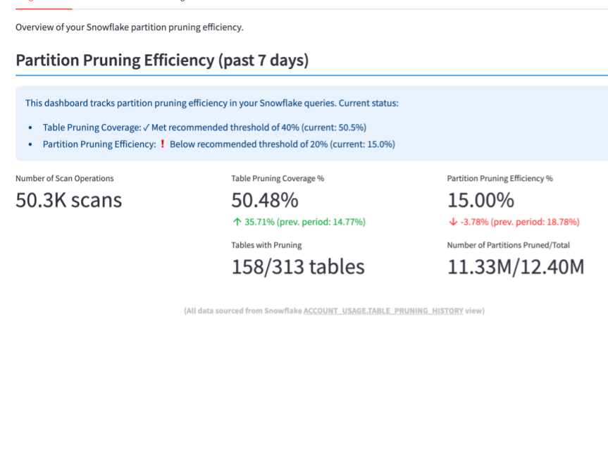
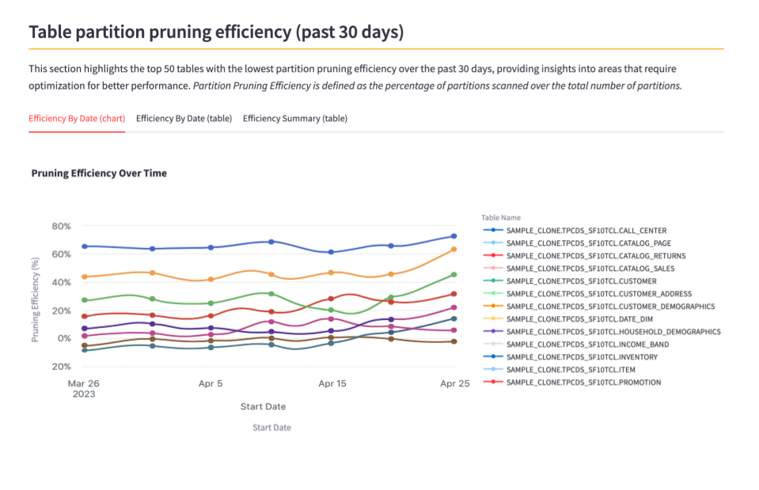
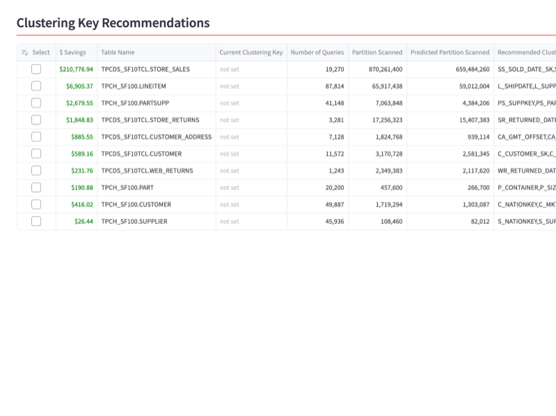

Optimize workloads, reduce spend, and never worry about tuning again
Learn more"See what's costing you — and exactly how to fix it."
Insights analyzes your Snowflake query patterns and recommends optimal clustering keys for every table — each with estimated credit and cost savings, so you know the impact before making a change.
Know exactly when, how, and why to cluster. Powered by AI/ML, backed by your own query data.
Unlock instant visibility into how efficiently your Snowflake queries are pruning partitions. Our platform continuously monitors and surfaces actionable insights — helping you optimize performance, reduce costs, and maximize the impact of every scan.

Pinpoint underperforming tables with low partition pruning efficiency. Our analysis highlights which tables are causing excessive scans, helping you prioritize optimization efforts where they matter most.

Get AI/ML-powered recommendations for optimal clustering keys based on your actual query patterns. Each recommendation includes estimated credit and dollar savings so you can prioritize the changes that matter most.

Leverage deep query telemetry to understand exactly how your data is being accessed and optimize accordingly.
Insights continuously monitors your workloads and adapts recommendations as your query patterns evolve.
Track and optimize partition pruning to ensure queries scan only the data they need.
Identify which tables would benefit most from clustering and prioritize optimization efforts.
Insights automates the analysis and generates clustering key recommendations — you review and apply changes at your discretion.
See exactly how much you can save — Insights calculates estimated credit and dollar savings per table based on your historical query costs.
Measured on TPC-H — the standard benchmark for decision-support query performance — and TPC-DS, the industry's most demanding test for large-scale analytics workloads. Real numbers from actual partition pruning and query execution, not projections.
Across the largest tables in both benchmarks, Goldilox consistently removes 60–80% of unnecessary partition scans. Bigger tables see bigger wins — and they're the ones that cost the most to scan.
Measured against unclustered baseline tables (shuffled to ~0% pruning, forcing full scans) — the worst-case scenario Goldilox is designed to fix.
Featured Article
"Optimizing Snowflake Table Clustering Keys Automatically: First Results from Insights"
Fully self-service — get up and running in 5 simple steps
Install Insights directly from the Snowflake Marketplace - no external deployments needed.
Grant the necessary permissions for Insights to analyze your query patterns.
Review and select recommended high impact tables to monitor and optimize.
Insights begins analyzing your workloads and generating optimization recommendations.
Implement recommendations and start seeing cost reductions within days.
Start free. Scale as you save. 10% discount when billed annually.
Opens Snowflake Marketplace — sign-in required
Opens Snowflake Marketplace — sign-in required
Opens Snowflake Marketplace — sign-in required
Opens Snowflake Marketplace — sign-in required
Goldilox is focused on one job: making Snowflake optimization automatic, measurable, and trustworthy — a problem every serious data team hits, and one that deserves a real engineering answer.
Two decades of experience designing and building data, cloud, and platform systems — from query engines to large-scale financial planning platforms.
Connect on LinkedInInsights uses trained prediction models to analyze your query patterns and telemetry data, identifying optimal clustering keys for your tables. By improving partition pruning, queries scan less data — resulting in faster execution times and lower compute costs. Each recommendation includes estimated credit and dollar savings so you can see the impact before making changes.
No! Insights is a Snowflake Native App, which means it runs entirely within your Snowflake environment. Simply install it from the Snowflake Marketplace and you're ready to go.
Typical savings range from 10% to 50% reduction in query costs, depending on your current clustering configuration and query patterns. Insights calculates estimated credit and dollar savings per table based on your actual query history — you'll see the numbers directly in the dashboard, not just during a consultation.
Absolutely. Insights operates entirely within your Snowflake environment. Your data never leaves your account, and we only analyze query metadata and telemetry - not your actual data.
Most customers see improvements within days of implementing Insights' recommendations. The analysis begins immediately after installation, and you'll receive actionable insights as soon as we've gathered enough data.
Insights has four public tiers based on the number of monitored tables: Small ($100/mo, up to 3 tables), Medium ($300/mo, up to 10), Large ($1,000/mo, up to 40), and custom Enterprise pricing for larger workloads. Every plan starts with a 30-day free trial. See the pricing section for details.
Get started with Insights today and see results within days.